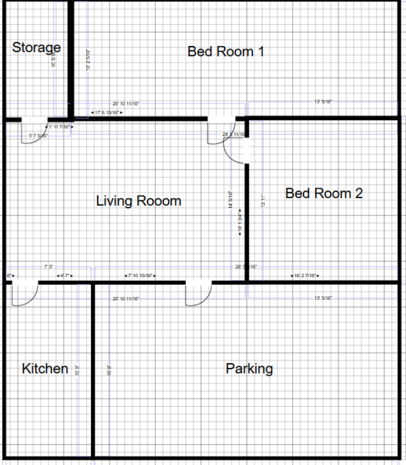
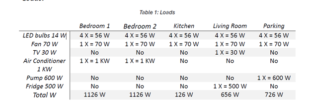
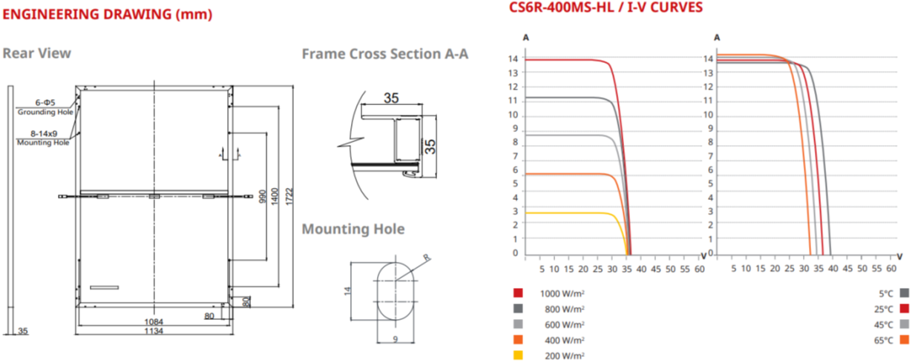
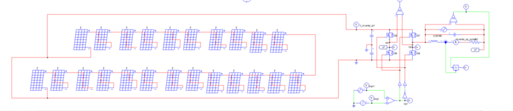
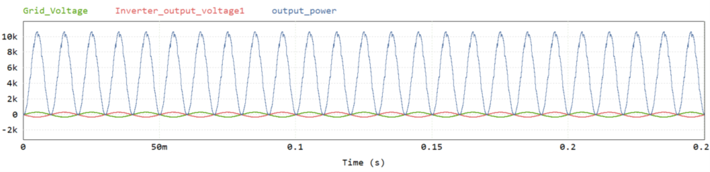
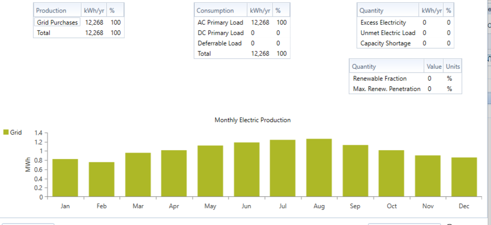
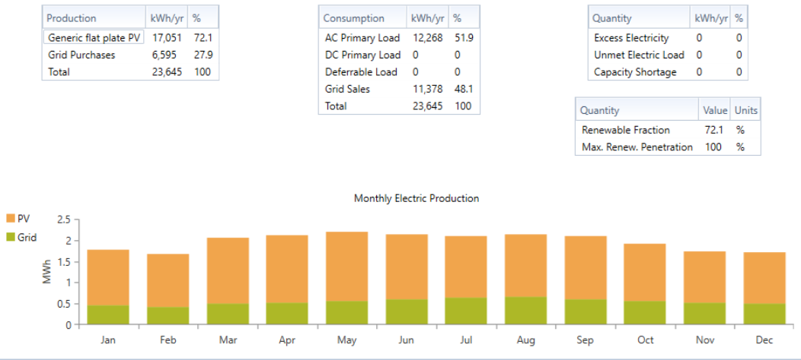

Design of a Grid-Connected Photovoltaic (PV) System for a Residential Building
Architecture, Control Strategy, Grid Integration, and Lifecycle Performance
Introduction
This project presents the design of a grid-connected rooftop photovoltaic (PV) system for a
residential building. The system is developed by aligning three core aspects:

- Household energy consumption patterns
- Household energy consumption patterns
- Grid compliance requirements
Figure 1 - Layout of House
Objective
The design aims to develop a conceptually sound, standards-compliant PV system that:
- Matches the array's operating envelope with inverter voltage and current constraints
- Ensures stable, low-distortion current injection at or near unity power factor
- Demonstrates long-term value through energy cost savings under variable demand and tariff conditions
System Overview and Design
Load Characterization
The residential load profile is categorized into lighting, plug loads, HVAC, and mechanical
systems. Daily energy demand defines the required array size, while timing and simultaneity of
loads inform decisions on whether energy is self-consumed or exported.

Table 1 - Loads
PV Module Characteristics
Photovoltaic modules act as nonlinear, current-limited sources. Their maximum power point (MPP)
varies with irradiance and temperature. String sizing is performed to ensure:
- Cold-weather open-circuit voltage remains below the inverter's DC maximum input
- Hot-weather MPP voltage remains within the inverter's high-efficiency zone
- Adequate voltage margins are available to accommodate environmental transients
Implementation and Control Strategy
Array Configuration and Stringing
Series connections define voltage levels, while parallel strings contribute to current output.
The string length is selected to minimize balance-of-system (BOS) complexity and mismatch
losses. Module placement is influenced by shading patterns, rooftop layout, and inverter input
limitations.

Figure 2 - PV Module I-V Characteristics and Layout
Inverter Functionality
A modern grid-tied inverter performs two primary control functions:
- Phase-locked synchronization with the utility grid and sinusoidal AC output regulation
- Maximum Power Point Tracking (MPPT) and DC bus stabilization to ensure optimal energy conversion
The system is designed to deliver sinusoidal current at unity power factor, with low total
harmonic distortion (THD) and compliance with anti-islanding, voltage, and frequency
ride-through standards.
Filtering and Power Quality
An output filter (typically L or LCL type) is used to suppress switching noise and ensure that
the injected grid current is smooth and sinusoidal. The filter is designed to balance harmonic
suppression with dynamic performance.
Cabling and Protection
Wiring is dimensioned based on ampacity, voltage drop limitations, and routing considerations.
Proper DC/AC protection, disconnect mechanisms, labeling, and grounding are incorporated to
ensure a code-compliant and safe installation.
Modeling and Verification
Simulation is used to evaluate the system's electrical performance and control behavior prior to
implementation. The emphasis is placed on waveform integrity, phase alignment, current
regulation, and transient response.

Figure 3 - PSIM Circuit Overview

Figure 4 - Composite waveform - Grid Voltage, Inverter Output, Output Power
Performance Metrics Assessed
-
Synchronization :Grid and inverter voltages are phase-aligned with stable zero-crossings
-
Current Injection :Exported current is sinusoidal with minimal ripple
-
Controller Dynamics :The inverter responds smoothly to changes in irradiance and load, without instability or oscillation in the DC bus voltage.
Lifecycle Performance and Value Analysis
The system's energy output is evaluated against household demand and prevailing tariff
structures. Monthly performance is assessed before and after PV installation, considering both
self-consumption and exported energy.

Figure 5 - Monthly Energy Before PV

Monthly Energy With PV
Interpretation of Lifecycle Plots
- Monthly profiles illustrate how PV generation aligns with household consumption.
- Savings outcomes depend on tariff policies—particularly the value of exported energy versus grid imports.
- The analysis emphasizes long-term resilience to policy shifts, energy prices, and seasonal variation.
Conclusion
This project demonstrates a methodical approach to designing a residential PV system grounded in
electrical theory, inverter control strategies, and lifecycle cost evaluation. The system aligns
hardware parameters with environmental conditions and grid constraints, ensuring clean energy
delivery, regulatory compliance, and meaningful long-term cost savings. The emphasis remains on
system resilience, waveform quality, and consistent performance throughout the year.